子宫和附件经阴道超声标准化方案
大力和左娜
妇科超声检查可根据扫描途径分为经腹超声、经阴道超声、经直肠超声和经会阴超声。
经腹超声要求患者膀胱充盈，膀胱充盈可作为声窗，改善盆腔结构的显示。然而，皮下脂肪或肠道气体可能会影响图像质量。 该方法主要适用于非性生活人群、有阴道异常者，或在需要更广视野时作为经阴道超声的补充。
经阴道超声使用插入患者阴道的内腔探头，由于探头与检查结构接近，可提供盆腔器官的详细、高分辨率图像。 它是生殖医学诊所常规妇科检查的首选方式。
经直肠超声用于经阴道超声禁忌或经腹超声不明确的情况。尽管有效，但临床使用频率不高。
会阴间超声作为替代方法，特别适用于青春期前患儿和患有盆腔器官脱垂等疾病的老年女性。
本章重点介绍了经阴道妇科超声的标准化方法，它是生殖医学中的一项基础诊断工具。
Standardized Protocol for Transvaginal Ultrasound of the Uterus and Adnexa
Da Li and Na Zuo
Gynecologic ultrasound examinations can be classified based on the scanning approach into transabdominal, transvaginal, transrectal, and transperineal ultrasounds.
Transabdominal ultrasound requires the patient to have a full bladder, which acts as an acoustic window, improving visualization of pelvic structures. However, the image quality may be compromised by subcutaneous fat or intestinal gas. This approach is primarily indicated for patients who are not sexually active, those with vaginal anomalies, or as a complement to transvaginal ultrasound in cases where a broader field of view is needed.
Transvaginal ultrasound involves the use of an endoluminal probe inserted into the patient's vagina, providing detailed, high-resolution images of pelvic organs due to the proximity of the probe to the structures being examined. It is the modality of choice for routine gynecologic evaluations in reproductive medicine clinics.
Transrectal ultrasound is reserved for cases where transvaginal ultrasound is contraindicated or when transabdominal imaging is inconclusive. Although effective, it is infrequently used in clinical practice.
Transperineal ultrasound serves as an alternative approach, particularly for prepubertal patients and older women with conditions such as pelvic organ prolapse.
This chapter focuses on the standardized approach to transvaginal gynecologic ultrasound, a cornerstone diagnostic tool in reproductive medicine.
3.1 经阴道超声检查前的准备和注意事项
3.1.1 患者选择
经阴道妇科超声通常在有性生活史的女性身上进行，因为它涉及将探头插入阴道。大多数在生育诊所就诊的患者都属于此类，因为她们通常是性活跃的。
然而，在某些情况下，该检查可能适用于非性活跃的患者，例如青少年或有特殊情况的女性。在这种情况下，确保患者充分了解该检查至关重要。 在进行检查前必须获得明确的书面知情同意。这一点在考虑对有非典型性行为史的女性进行经阴道超声时尤为重要，例如其男性伴侣患有勃起功能障碍或其他影响性活动的疾病。 全面的咨询应在手术前进行，以确保患者的舒适和理解。
3.1.2 患者体位和注意事项
检查过程中，患者应采取膀胱截石位，以便于最佳的探查和成像。可在臀部下方放置小垫或让患者握拳，增加舒适度和更好的视野。在妇科检查床上进行经阴道超声能使探头操作更方便，并从多个角度获得更好的视野。
在整个过程中，隐私是一个关键的考虑因素。超声检查应在安全、私密的环境中进行，以保护患者的尊严和舒适度。
3.1.3 超声扫描前的准备
1. 设备设置
超声设备在检查前应进行预配置。设置应旨在最小化超声能量暴露，同时确保诊断准确性。扫描过程中，超声技师应根据实时图像调整关键参数，如扫描深度、增益和焦点。如有必要，可使用局部放大功能以获得更精细的细节。
3.1 Preparation and Precautions Before Transvaginal Ultrasound Examination
3.1.1 Patient Selection
Transvaginal gynecologic ultrasound is typically performed on females with a history of sexual activity, as it involves the insertion of a probe into the vaginal canal. Most patients seen in fertility clinics fall into this category, as they are generally sexually active.
However, there are instances where the procedure may be considered for patients who are nonsexually active, such as adolescents or women with unique circumstances. In such cases, ensuring the patient is fully informed about the procedure is crucial. Explicit informed consent must be obtained before proceeding. This is especially important when considering transvaginal ultrasound for women with atypical sexual histories, such as those whose male partners have erectile dysfunction or other conditions affecting sexual activity. Comprehensive counseling should precede the procedure to ensure the patient's comfort and understanding.
3.1.2 Patient Positioning and Precautions
During the examination, the patient should be positioned in the lithotomy position to facilitate optimal access and imaging. A small cushion or the patient's clenched fists may be placed under the hips for added comfort and better visualization. Conducting the transvaginal ultrasound on a gynecologic examination table enables easier manipulation of the transducer and improved visualization from multiple angles.
Privacy is a critical consideration during the procedure. The ultrasound examination should be performed in a secure, private setting to protect the patient's dignity and comfort.
3.1.3 Preparations Before the Ultrasound Scan
1. Equipment setup
The ultrasound machine should be preconfigured before the examination. Settings should aim to minimize ultrasound energy exposure while ensuring diagnostic accuracy. During the scan, the sonographer should adjust key parameters such as scanning depth, gain, and focus based on the real-time images. Enhanced detail can be achieved by using the local zoom function as necessary.
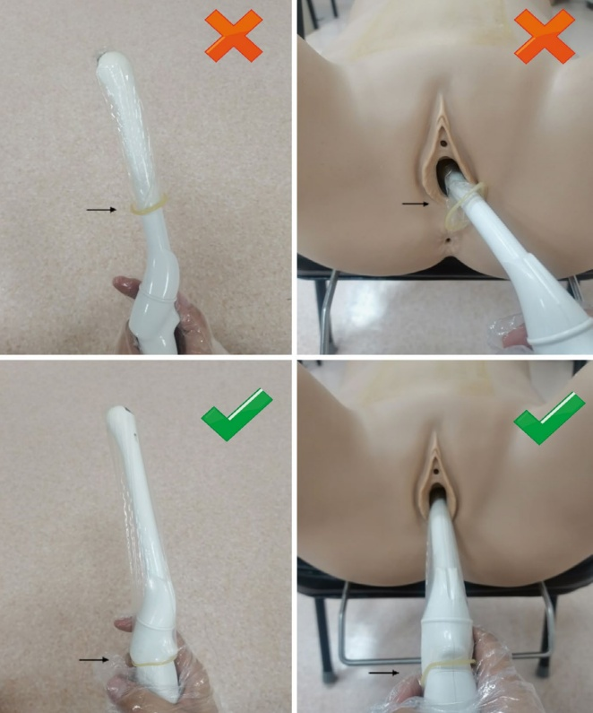
2. 标准化方案
在我院，超声检查采用以下标准化方案：（a）超声技师必须佩戴一次性手套。（b）检查床上应铺设一次性覆盖物。（c）探头需使用一个或两个一次性罩。 在月经或阴道出血的情况下，使用两层敷料，并在其间放置耦合凝胶以防止渗漏。 (d) 超声探头罩必须延伸至手柄处，以防止扫描过程中与患者外阴接触造成交叉污染（如图3.1所示）。
2. Standardized protocol
At our hospital, the following standardized protocol is implemented for trans-vaginal ultrasound: (a) The sonographer must wear disposable gloves. (b) A single-use drape should be placed on the examination table. (c) One or two disposable covers are applied to the transducer. In cases of menstruation or vaginal bleeding, two covers are used with coupling gel placed between them to prevent leakage. (d) The transducer cover must extend down to the handle to prevent cross-contamination from contact with the patient's vulva during the scan (as illustrated in Fig. 3.1).
3. 患者安全与舒适度
所有准备工作，包括设备设置和探头操作，都应在患者的视线范围内进行，以使其感到放心，并减轻其对安全或卫生的潜在担忧。
4. 卫生和消毒
超声探头必须根据既定的感染控制指南进行定期清洁和消毒。确保适当的卫生规程可以降低交叉污染的风险，并维持患者安全。
3.1.4 图像存储
应系统地捕获并存储所有相关盆腔器官的标准视图。此外，还应在超声工作站中保存突出关键发现的高质量正面图像和运动片段。图像存储具有多种用途：
临床用途：存储的图像可进行后处理、详细回顾和与患者既往记录的比较，有助于持续的诊断和治疗决策。
法律文件：保留有记录的图像在医疗纠纷中提供了关键证据，强调了将细致的图像存储作为临床最佳实践的重要性。
3.2 子宫正常图像和测量
3.2.1 宫颈
通过将超声探头推进至阴道穹窿顶端，可观察到宫颈的矢状面。宫颈包括前唇和后唇，此时宫颈管呈纺锤形。当阴道内有粘液时，通常表现为无回声区域。
评估宫颈时，应仔细检查其与子宫和阴道上段的关系。还必须筛查是否有占位性病变或异常。
检查过程中应记录三个关键的宫颈尺寸：
- 纵向宫颈直径：测量从宫内口到宫外口。正常范围为 2.5 cm–3 cm。
3. Patient safety and comfort
All preparatory actions, including equipment setup and transducer handling, should be performed within the patient's view to reassure them and alleviate potential concerns about safety or hygiene.
4. Hygiene and sterilization
Ultrasound probes must undergo regular cleaning and sterilization as per established infection control guidelines. Ensuring proper hygiene protocols reduces the risk of cross-contamination and maintains patient safety.
3.1.4 Storage of Images
Standard views of all relevant pelvic organs should be systematically captured and stored during the examination. Additionally, high-quality positive images and motion clips highlighting key findings should be saved in the ultrasound workstation. Image storage serves multiple purposes:
Clinical utility: Stored images allow for postprocessing, detailed review, and comparison with the patient's prior records, aiding in ongoing diagnostic and treatment decisions.
Legal documentation: Retaining documented images provides critical evidence in medical disputes, underscoring the importance of meticulous image storage as part of clinical best practices.
3.2 Normal Uterine Images and Measurements
3.2.1 Cervix
The midsagittal plane of the cervix is visualized by advancing the ultrasound probe to the apex of the vaginal canal. The cervix comprises anterior and posterior lips, with the cervical canal spindle-shaped in this view. When mucus is present within the canal, it typically appears as an anechoic (echo-free) region.
When assessing the cervix, its relationship to the uterus and the upper segment of the vagina should be carefully examined. It is also essential to screen for any space-occupying lesions or abnormalities.
Three key cervical dimensions should be recorded during the examination:
- Longitudinal cervical diameter: Measured from the internal os (internal cervical orifice) to the external os (external cervical orifice). The normal range is 2.5 cm–3 cm.
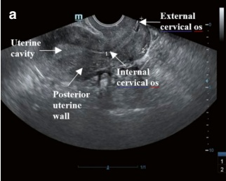
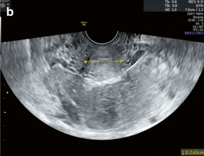
前后宫颈径：沿纵轴垂直测量的宫颈前部到后部的最大距离。
横向宫颈径：横截面上宫颈的最大宽度。
这些测量有助于建立正常的宫颈解剖结构，并检测可能提示病理变化的偏差（图 3.2）。
3.2.2 子宫体部
1. 确定子宫位置
在经阴道超声检查中，应评估子宫的轮廓、子宫肌层的均匀性以及是否存在占位性病变。子宫位置通常分为前倾、前倾+前屈、后倾或后倾+后屈。
(a) 前位与后位：
前位子宫：子宫的长轴前倾，位于身体长轴的前方。超声上，子宫底指向膀胱（图 3.3a）。
倒位子宫：子宫的长轴向后倾斜，位于身体纵轴的后方。超声上，宫底指向直肠（图 3.3b）。
(b) 前屈与后屈位：
前屈子宫：子宫长轴与宫颈之间的夹角是前向的（图 3.3c）。
后屈子宫：子宫长轴与宫颈之间的夹角是后向的（图 3.3d）。
Anteroposterior cervical diameter: The maximum distance from the anterior to the posterior aspect of the cervix, measured perpendicular to the longitudinal cervical axis.
Transverse cervical diameter: The maximum width of the cervix in the transverse plane.
These measurements help establish normal cervical anatomy and detect deviations that may indicate pathology (Fig. 3.2).
3.2.2 Corpus Uteri (Body of the Uterus)
1. Determining the position of the uterus
During transvaginal ultrasound, the uterus should be evaluated for its contour, the homogeneity of the myometrium, and the presence of any space-occupying lesions. The uterine position is typically categorized as anteverted, anteverted + anteflexed, retroverted, or retroverted + retroflexed.
(a) Anteverted vs. retroverted positions:
Anteverted uterus: The uterus's longitudinal axis is tilted forward, lying anterior to the body's longitudinal axis. On ultrasound, the uterine fundus points toward the bladder (Fig. 3.3a).
Retroverted uterus: The longitudinal axis of the uterus is tilted backward, lying posterior to the body's longitudinal axis. On ultrasound, the fundus points toward the rectum (Fig. 3.3b).
(b) Anteflexed vs. retroflexed positions:
Anteflexed uterus: The angle between the longitudinal axis of the uterus and the cervix is forward-facing (Fig. 3.3c).
Retroflexed uterus: The angle between the longitudinal axis of the uterus and the cervix is backward-facing (Fig. 3.3d).
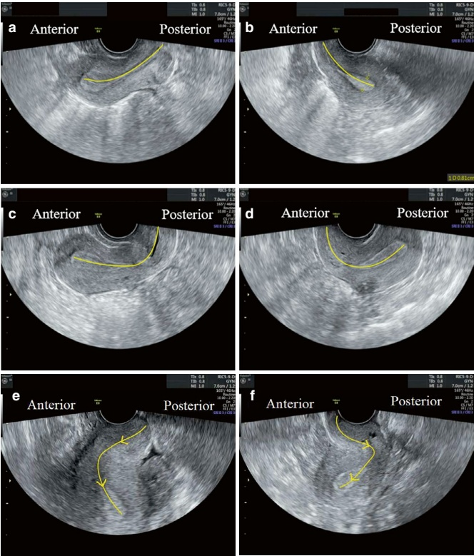
(c) 其他较不常见的子宫位置，虽然很少讨论，但对生殖医学中的宫腔内操作和手术非常重要。这些包括：
- 子宫颈向左前倾，子宫体相对于子宫颈呈后方右角（在4.8%的人群中观察到）。该位置如图3.3e所示。
(c) Other, less common uterine positions, while rarely discussed, can significantly impact intrauterine procedures and surgical operations in reproductive medicine. These include the following:
- The cervix is angled to the left anteriorly, with the uterine fundus angled posteriorly at a right angle to the cervix (observed in 4.8% of the population). This positioning is depicted in Fig. 3.3e.
- 子宫颈向右后倾，而子宫体向左倾斜（最罕见的位置，在0.3%的人群中观察到）。该位置如图3.3f [1]所示。
子宫形态畸形或位置异常可能会使子宫输卵管造影术（HSG）过程中放置造影剂导管、使用输送管进行胚胎移植、宫腔镜检查或人工流产过程中器械操作等宫内操作复杂化。
这些挑战会增加手术时间和邻近组织损伤的风险。为将并发症降到最低，临床医生必须在手术前和手术中透彻了解子宫的解剖学特征以及宫颈管和宫腔的排列情况。这种了解对于缩短手术时间和避免意外损伤至关重要。
- 用于测量子宫体径的三种直径
(a) 长径：
这是从子宫底的浆膜层到宫颈内口，在子宫矢状面测得的距离。育龄期女性的正常参考范围为 5.0 cm–7.5 cm。
(b) 前后径：
在同一矢状切面上，测量子宫前壁和后壁之间的最大距离，该距离垂直于长轴。育龄期女性此直径的正常范围为 3.0 cm–4.5 cm。
(c) 横径：
这是测量子宫角下方最大宽度。为获得此测量值，需将探头旋转 $ 90^{\circ} $ 以观察子宫底的横切面。育龄期女性的正常参考范围为 4.5 cm–6.0 cm。
在典型病例中，这三个测量值的总和小于 15.0 cm [2]（图 3.4）。
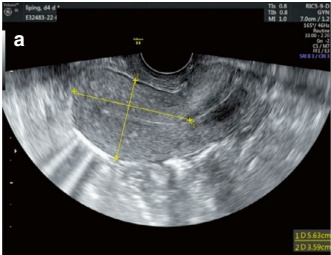
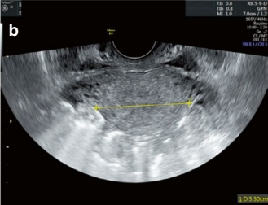
- The cervix is angled to the right in a retroverted axis, while the uterine body is angled to the left (the rarest position, observed in 0.3% of the population). This positioning is shown in Fig. 3.3f [1].
A distorted uterine shape or atypical positioning may complicate intrauterine procedures such as placement of a contrast catheter during hysterosalpingography, embryo transfer using a transfer tube, hysteroscopy, or instrument manipulation during abortion procedures.
These challenges can increase the duration of the procedure and the risk of adjacent tissue injury. To minimize complications, clinicians must thoroughly understand the anatomical characteristics of the uterus and the alignment of the cervical canal and uterine cavity before and during such operations. This understanding is critical for reducing operation time and avoiding inadvertent injuries.
- Three diameters used for uterine body measurements
(a) Longitudinal diameter:
This is the distance from the serosal layer of the uterine fundus to the internal cervical os, measured in the midsagittal plane of the uterus. The normal reference range for women of childbearing age is 5.0 cm–7.5 cm.
(b) Anteroposterior diameter:
The maximum distance between the anterior and posterior uterine walls is measured perpendicular to the longitudinal diameter in the same sagittal plane. The normal range for this diameter is 3.0 cm–4.5 cm in women of childbearing age.
(c) Transverse diameter:
This is the maximum width of the uterus measured slightly below the uterine horns. To obtain this measurement, the transducer is rotated $ 90^{\circ} $ to visualize the transverse plane of the uterine fundus. The normal reference range for women of childbearing age is 4.5 cm–6.0 cm.
In typical cases, the sum of these three measurements is less than 15.0 cm [2] (Fig. 3.4).
3.2.3 子宫内膜
1. 子宫内膜厚度的测量
子宫内膜厚度在子宫的矢状面，于子宫内膜最厚的点进行测量。从子宫内膜中线垂直画一条线，测量点位于子宫内膜和子宫肌层的交界处。测量时应包括交界两侧的基底膜 [3]（图 3.5）。
如果宫腔内有液体，应分别测量前壁和后壁子宫内膜的厚度（图 3.6）。
月经周期不同阶段正常的子宫内膜厚度：（a）月经期：子宫内膜脱落，厚度范围为 2 mm 至 3 mm。（b）早期增生期（月经周期的第 5–7 天）：子宫内膜
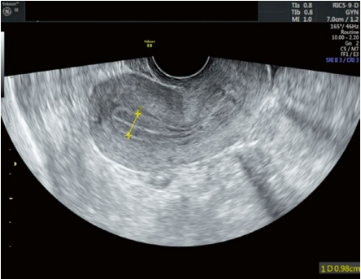
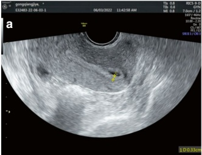
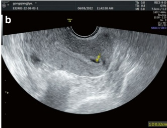
3.2.3 Endometrium
1. Measurement of endometrial thickness
Endometrial thickness is measured in the midsagittal plane of the uterus at the thickest point of the endometrium. A line is drawn perpendicular to the midline of the endometrium, with the measurement point located at the junction between the endometrium and the myometrium. Both the basal laminae on each side of the junction should be included in the measurement [3] (Fig. 3.5).
If fluid is present within the uterine cavity, the thickness of the endometrium on the anterior and posterior walls should be measured separately (Fig. 3.6).
Normal endometrial thickness at various phases of the menstrual cycle: (a) Menstruation: The endometrium is shed, and its thickness ranges from 2 mm to 3 mm. (b) Early proliferation (days 5–7 of the menstrual cycle): The endometrium
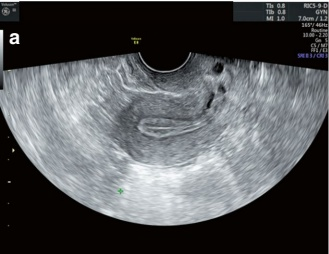
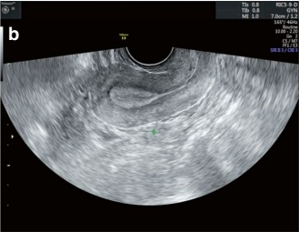
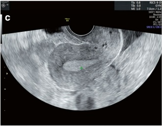
测量为5毫米–6毫米。(c) 中期增生（月经周期的第8–10天）：子宫内膜增厚至7毫米–8毫米。(d) 晚期增生（月经周期的第11–14天）：子宫内膜厚度为9毫米–10毫米。(e) 分泌期：子宫内膜达到最厚点，可测量达12毫米，在某些情况下，可达到15毫米[2]。
2. 子宫内膜形态学评估
子宫内膜对卵巢分泌的激素发生周期性变化。随着卵泡成熟和雌激素分泌增加，子宫内膜逐渐增厚，这一过程主要由雌激素驱动。此阶段被称为子宫内膜的增殖期，对应于卵泡期的卵巢周期。
在超声上，增殖期子宫内膜的特点是：(a) 基底层回声强；(b) 功能层回声低；(c) 宫腔中线呈强回声（图3.7）。
排卵后，雌激素和孕激素均影响子宫内膜，刺激子宫内膜腺体的分泌活动和血管的增生。此期称为子宫内膜分泌期，对应于卵泡周期的黄体期。
measures 5 mm–6 mm. (c) Mid proliferation (days 8–10 of the menstrual cycle): The endometrium thickens to 7 mm–8 mm. (d) Late proliferation (days 11–14 of the menstrual cycle): The endometrium is 9 mm–10 mm thick. (e) Secretory phase: The endometrium reaches its thickest point, measuring up to 12mm, and in some cases, it can reach up to 15 mm [2].
2. Evaluation of endometrial morphology
The endometrium undergoes cyclic changes in response to hormones secreted by the ovaries. As ovarian follicles mature and estrogen secretion increases, the endometrium progressively thickens, a process primarily driven by estrogen. This phase is referred to as the proliferative phase of the endometrium, which corresponds to the follicular phase of the ovarian cycle.
On ultrasound, the proliferative phase endometrium is characterized by: (a) strong echogenicity in the basal layer; (b) low echogenicity in the functional layer; (c) strong-echo intrauterine midline (Fig. 3.7).
After ovulation, both estrogen and progesterone influence the endometrium, stimulating the secretion activity of endometrial glands and the proliferation of blood vessels. This phase is known as the secretory phase of the endometrium, corresponding to the luteal phase of the ovarian cycle.
在超声上，分泌期子宫内膜的特点如下：(a) 功能层回声增高；(b) 子宫中线清晰度下降；(c) 在晚期分泌期，子宫内膜的所有层次均呈均匀、中等强度的回声。
子宫内膜模式可分为三类：（a）三层线：低回声，外壁清晰，中央有高回声线。（b）等回声：等回声，中央高回声线边界不清。（c）均匀高回声：无可见中央线的高回声 [4]（图 3.7）。
3.3 正常卵巢图像和测量
3.3.1 卵巢
要观察卵巢，超声探头应置于子宫的骨盆侧方，使正常的卵巢位于髂血管的前方。应仔细检查双侧卵巢和附件区是否有占位性病变。
对于卵巢测量，应在显示卵巢最大长轴的平面上测量卵巢的长径和前后径。然后将超声探头旋转 $90^\circ$ 以获得垂直于前一个平面的切面，从而可以测量卵巢的横径 [3]（图 3.8）。正常卵巢的大小约为 $4 \text{ cm} \times 3 \text{ cm} \times 1 \text{ cm}$。
3.3.2 卵泡测量
目前没有关于测量卵泡大小的普遍共识或标准化指南[5]。
对于形状规则的卵泡，常见的临床做法是测量卵泡最大部分的两个相互垂直的直径，然后
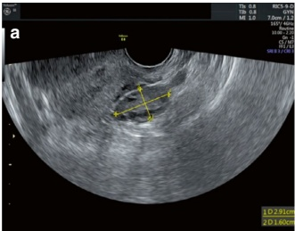
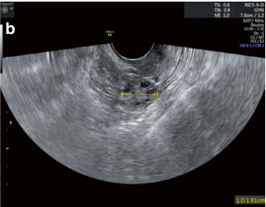
On ultrasound, the secretory phase endometrium is characterized by the following: (a) increased echogenicity in the functional layer; (b) decreased clarity of the intrauterine midline; (c) in the late secretory phase, all layers of the endometrium show homogeneous, medium-strength echogenicity.
Endometrial patterns can be categorized into three types: (a) Triple line: Hypoechoic with well-defined outer walls and a central echogenic line. (b) Isoechogenic: Isoechoic with a poorly defined central echogenic line. (c) Homogeneous hyperechogenic: Hyperechoic with no visible central line [4] (Fig. 3.7).
3.3 Normal Ovarian Images and Measurements
3.3.1 Ovary
To visualize the ovary, the ultrasound probe should be positioned on the parietal side of the uterus, allowing the normal ovary to be seen anterior to the iliac vessels. Both bilateral ovaries and adnexal areas should be carefully examined for any space-occupying lesions.
For ovarian measurements, the longitudinal and anteroposterior diameters of the ovary should be measured in the plane showing the ovary's maximal long axis. The ultrasound probe is then rotated $ 90^\circ $ to obtain a section perpendicular to the previous one, which allows for the measurement of the transverse diameter of the ovary [3] (Fig. 3.8). The normal size of an ovary is approximately $ 4 , \text{cm} \times 3 , \text{cm} \times 1 , \text{cm} $.
3.3.2 Measurement of Follicles
There is no universal consensus or standardized guideline for measuring follicle size [5].
A common clinical practice for regularly shaped follicles is to measure two diameters perpendicular to each other in the largest section of the follicle and then
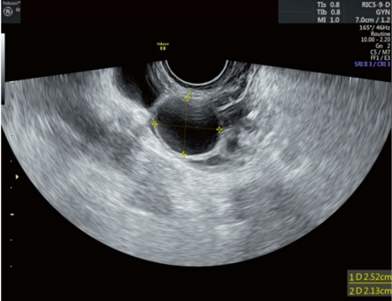
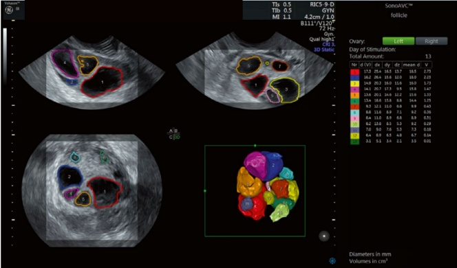
平均这些值以代表其大小（图3.9）。成熟的卵泡直径通常在18毫米到25毫米之间。然而，卵泡是三维的，形状往往不规则，这降低了测量的可靠性，特别是在超促排卵期间同时发育多个大卵泡时[6, 7]。
卵泡体积被认为评估卵泡大小最准确的方法[7]（图3.10）。然而，该技术需要高质量的成像，并且在5%的患者中测量可能失败。 在15%的患者中，需要图像后处理才能获得可靠的数值[5]。因此，卵泡体积在临床实践中不常规使用。
average these values to represent its size (Fig. 3.9). Mature follicles typically range from 18 mm to 25 mm in diameter. However, follicles are three-dimensional and often have irregular shapes, which reduces the reliability of measurements, especially when multiple large follicles are developing simultaneously during superovulation [6, 7].
Follicular volume is considered the most accurate method for assessing follicle size [7] (Fig. 3.10). However, this technique requires high-quality imaging and accurate measurements can fail in 5% of patients. In 15% of patients, image post-processing is necessary to obtain reliable values [5]. As a result, follicular volume is not routinely used in clinical practice.
对于形状不规则的卵泡，超声医师必须仔细寻找优势卵泡并选择最具代表性的直径进行测量。在此过程中，避免选择过大或过小的部分至关重要。 此外，测量应考虑患者的月经周期、子宫内膜厚度、子宫内膜形态和血激素水平，以全面评估卵泡的发育阶段和成熟度。
3.3.3窦卵泡计数（AFC）的判定标准
在月经周期的第2至第4天进行超声检查时可识别出窦卵泡。直径在2 mm到10 mm之间的卵泡被认为是窦卵泡。卵巢内无回声区，如果其大小为点状或小于2 mm，则不能被归类为窦卵泡。
双侧卵巢窦卵泡的总数是评估卵巢储备的重要指标，有助于预测卵巢对促性腺激素的反应 [8]。该计数在选择合适的排卵方案和确定促性腺激素正确剂量方面起着关键作用 [9]（更多细节见第6章第6.4节）。
3.4 报告的规范书写
一份规范的超声报告应包括以下要素：（a）基本患者信息；（b）器官或病变的代表性图像；（c）检查过程中发现的描述；（d）超声诊断和任何相关的建议。
报告必须使用专业和标准化的术语书写，确保所有描述具有目的性、清晰性和客观性。它应详细说明主要发现，并为任何次要发现提供适当的背景信息，从而促进结果的准确传达和临床决策制定。
3.4.1 超声检查的描述
1. 子宫
子宫体：描述子宫的位置、大小和回声。
注意是否有占位性病变，并详细描述任何病变，包括其位置、大小、边缘、回声以及与子宫肌层或子宫内膜的解剖关系。宫颈：包括宫颈的大小、是否有占位性病变，以及对观察到的任何病变的特征描述。
For irregularly shaped follicles, the sonographer must carefully search for the dominant follicle and select the most representative diameters for measurement. During this process, avoiding selecting overly large or small sections is crucial. Additionally, measurements should consider the patient's menstrual phase, endometrial thickness, endometrial morphology, and blood hormone levels to evaluate the follicle's developmental stage and maturity comprehensively.
3.3.3 Criteria for Antral Follicle Count
Antral follicles are identified by ultrasonography on the second to fourth day of the menstrual cycle. Follicles measuring between 2 mm and 10 mm in size are considered antral follicles. Nonechoic areas within the ovary that are pinpoint-sized or smaller than 2 mm cannot be classified as antral follicles.
The total number of antral follicles in both ovaries is an important indicator of ovarian reserve and helps to predict the ovarian response to gonadotropins [8]. This count plays a crucial role in selecting an appropriate ovulation regimen and determining the correct dose of gonadotropins [9] (see Sect. 6.4 in Chap. 6 for more details).
3.4 Normative Writing of Reports
A well-standardized ultrasound report should include the following elements: (a) basic patient information; (b) representative images of organs or lesions; (c) description of findings during the examination; (d) ultrasonographic diagnosis and any relevant recommendations.
The report must be written using specialized and standardized terminology, ensuring that all descriptions are purposeful, clear, and objective. It should detail the major findings and provide appropriate context for any subfindings, facilitating accurate communication of results and clinical decision-making.
3.4.1 Description of Findings on Ultrasound
1. Uterus
Body of the uterus: Describe the position, size, and echogenicity of the uterus.
Note the presence or absence of any space-occupying lesions, and provide detailed descriptions of any lesions, including their location, size, margins, echogenicity, and anatomical relationship to the myometrium or endometrium. Cervix: Include the size of the cervix, the presence or absence of space-occupying lesions, and a description of the characteristics of any lesions observed.
内皮：测量子宫内膜厚度并描述其形态模式。注意是否存在占位性病变，并描述其特征。
2. 卵巢
描述双侧卵巢大小、优势卵泡大小、双侧窦卵泡数量以及任何占位性病变的形态特征（如存在）。
3. 输卵管
正常的输卵管在无造影剂增强的超声下通常无法清晰显示。但是，可以检测到输卵管积水或脓性输卵管炎等异常情况。如果存在此类异常，请描述受累输卵管（s）的大小、形态和回声特征。
4. 盆腔
记录盆腔积液的有无。如存在，请提供积液的超声回声性质、宽度和深度等详细信息。此外，注意盆腔内是否有占位性病变，并描述任何此类病变。最后，评估并记录盆腔脏器的活动度。
3.4.2 超声诊断与建议
超声诊断包括四个主要组成部分：（a）解剖定位；（b）体征诊断；（c）可能疾病的诊断；（d）临床建议。
诊断过程首先是确定是否存在以及病变的性质：(a) 对于可以明确诊断的病例（例如，子宫畸形、子宫腺肌病），可以直接进行超声诊断。 (b) 对于无法做出明确诊断，但怀疑有初步诊断的情况，可根据临床经验提出最可能的病症（例如：“考虑高度可能为……”）。 (c) 对于无法给出明确诊断的情况，重要的是描述病变的物理性质（例如，实性回声、囊实性混合回声、无回声、高回声和低中等混合回声）。
最后，根据检查结果，应提供适当的临床建议。例如：(a) 如果宫腔回声不清，可建议行宫腔镜检查。(b) 对于月经前出现异质性内膜回声，可在月经后复查超声。
Endothelium: Measure endometrial thickness and describe its morphological patterns. Note the presence or absence of any space-occupying lesions and describe their characteristics.
2. Ovaries
Describe the bilateral ovarian size, the size of the dominant follicle, the number of antral follicles in both ovaries, and the morphological profile of any space-occupying lesions, if present.
3. Fallopian tubes
Normal fallopian tubes are generally not clearly visualized on ultrasound without contrast enhancement. However, abnormalities such as hydrosalpinx or pyosalpinx can be detected. If such abnormalities are present, describe the size, morphology, and echogenic characteristics of the affected fallopian tube(s).
4. Pelvic cavity
Document the presence or absence of pelvic effusion. If present, provide details on the echogenic nature, width, and depth of the effusion. Also, note the presence or absence of any space-occupying lesions in the pelvic cavity and provide descriptions of any such lesions. Finally, assess and document the mobility of pelvic organs.
3.4.2 Ultrasonic Diagnosis and Recommendations
Ultrasonic diagnosis consists of four major components: (a) anatomical localization; (b) physical diagnosis; (c) diagnosis of possible diseases; (d) clinical recommendations.
The diagnostic process begins by identifying the presence and nature of any lesions: (a) Direct ultrasonic diagnosis can be made for cases where the exact disease is identifiable (e.g., uterine anomalies, adenomyosis). (b) For cases where a definitive diagnosis cannot be made, but a probable diagnosis is suspected, the most likely condition can be suggested based on clinical experience (e.g., “Consider high probability of...”). (c) For cases where a definitive diagnosis cannot be given, it is important to characterize the physical nature of the lesion (e.g., solid echogenicity, cystic-solid mixed echogenicity, nonechogenicity, high echogenicity, and low-moderate mixed echogenicity).
Finally, based on the findings, appropriate clinical recommendations should be provided. For instance: (a) If uterine echogenicity is unclear, a hysteroscopy may be recommended. (b) For heterogeneous endometrial echogenicity prior to menstruation, repeat ultrasonography after menstruation could be advised.